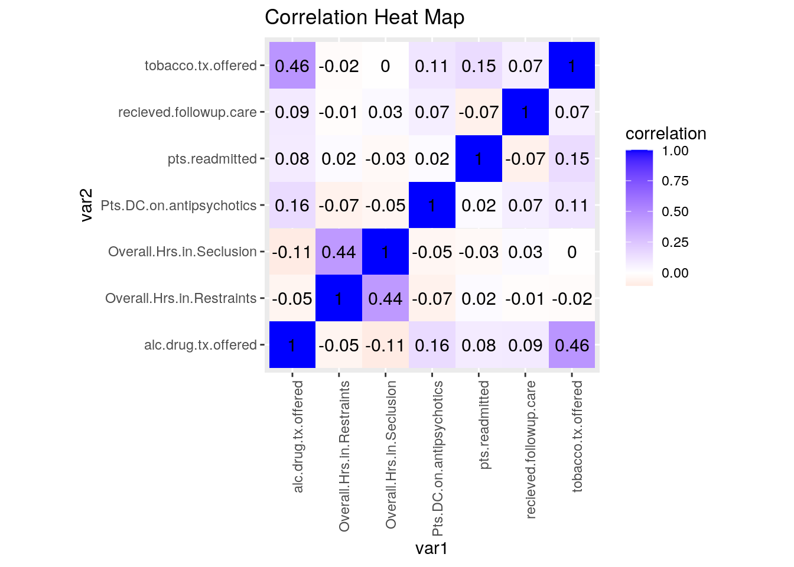
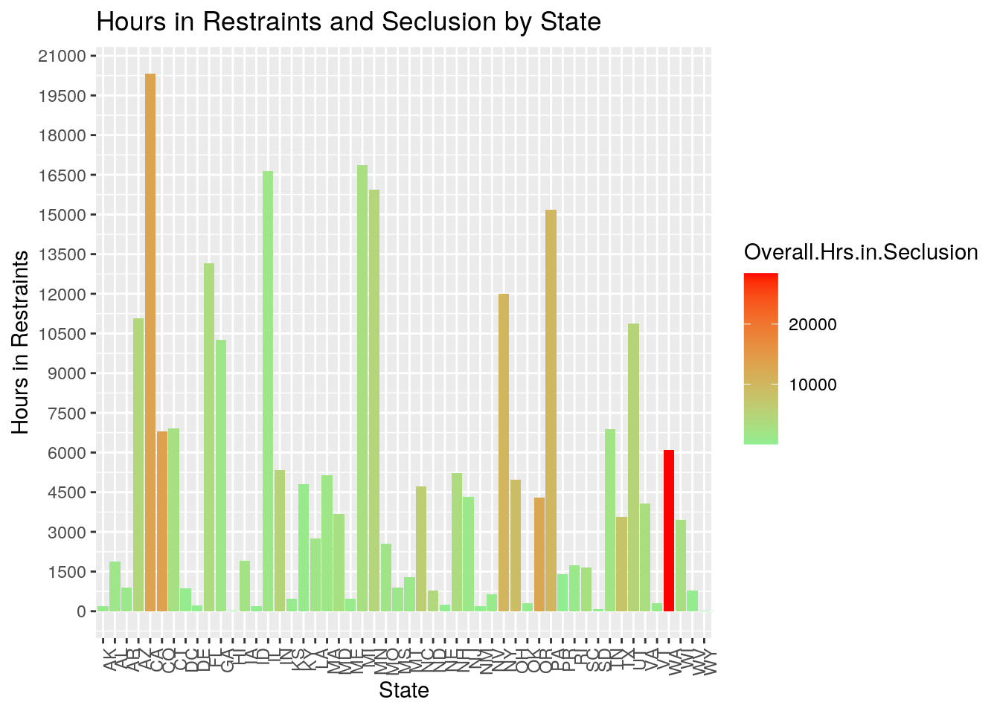
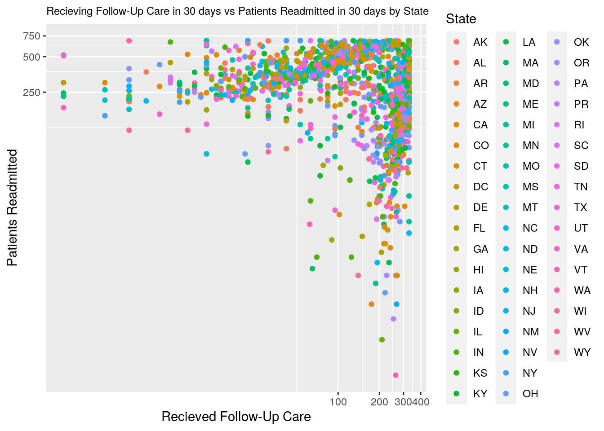
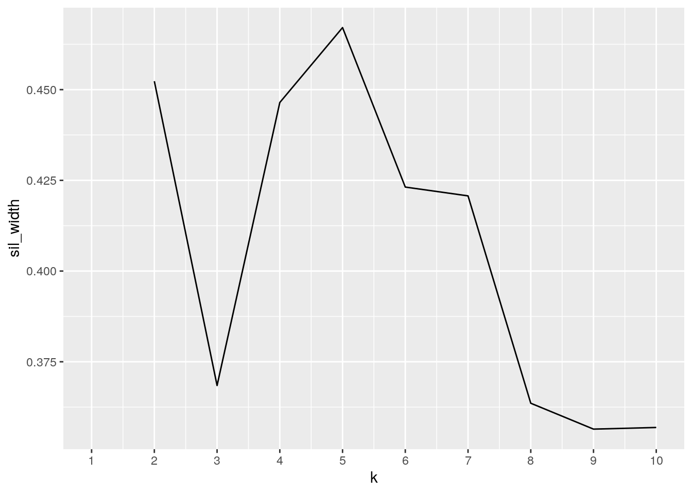
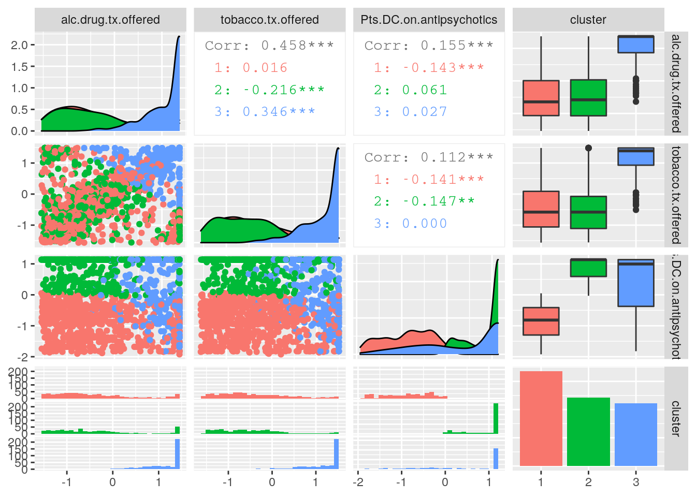

The two datasets that I have chosen are from the U.S. Department of Health and Human Services and are active datasets that were last updated June 20, 2020. One dataset describes psychiatric care by state and the other by facility which contains facilities from all over the nation. There are some categorical variables describing the location of facilities. The numeric variables are Hours of Physical Restraint, Hours of Seclusion, Patients Discharged on Multiple Antipsychotic Medications, Patients Readmitted to Any Hospital 30 Days After Discharge, Patients Offered Alcohol and Drug Treatment and Patients Offered Tobacco Treatment.
I chose this data because I work at an inpatient psychiatric hospital. I have noticed that inpatient psychiatric care tends to differ state-by-state depending on many factors such as funding and laws in different states surrounding behavioral health. These variables are often controversial matters that different states and even hospitals handle differently such as hours in seclusion. Some states have different laws about how long an indiviual can be in seclusion. I suspect that states with higher numbers of patients discharged on multiple antipsychotic medications may be associated with a higher number of patients readmitted because often times areas with patients with a more psychotic diagnosis have higher readmission rates due to the nature of the illness. I also suspect that states with higher hours of physical restraint will have higher hours of seclusion.
ipstate <- read.csv("inpatientstate.csv")
ipfacility <- read.csv("inpatientfacility1.csv")library(tidyverse)
glimpse(ipfacility)## Rows: 1,597
## Columns: 17
## $ Facility.ID <int> 50077, 50272, 50567, 70008, 100135, 100…
## $ Facility.Name <fct> "SCRIPPS MERCY HOSPITAL", "REDLANDS COM…
## $ Address <fct> "4077 5TH AVE", "350 TERRACINA BLVD", "…
## $ City <fct> SAN DIEGO, REDLANDS, MISSION VIEJO, STA…
## $ State <fct> CA, CA, CA, CT, FL, FL, GA, IL, IL, IN,…
## $ ZIP.Code <int> 92103, 92373, 92691, 6076, 32308, 34655…
## $ County.Name <fct> SAN DIEGO, SAN BERNARDINO, ORANGE, TOLL…
## $ HBIPS.5.Measure.Description <fct> Patients discharged on multiple antipsy…
## $ HBIPS.5.Denominator <fct> 41, 14, 54, 11, 18, 12, Not Available, …
## $ SUB.3..3a.Measure.Description <fct> Alcohol and other drug use disorder tre…
## $ SUB.3.Denominator <fct> 367, 322, 141, 332, 222, 420, 109, 430,…
## $ TOB.3..3a.Measure.Description <fct> Tobacco use treatment provided or offer…
## $ TOB.3.Denominator <fct> 176, 239, 99, 327, 203, 368, 70, 331, 1…
## $ FUH.Measure.Description <fct> Percent of patients receiving follow-up…
## $ FUH.30.Denominator <fct> 92, 52, 93, 69, 99, 147, 132, 49, 92, 8…
## $ READM.30.IPF.Measure.Desc <fct> Patients readmitted to any hospital wit…
## $ READM.30.IPF.Denominator <fct> 319, 111, 244, 245, 250, 530, 388, 157,…glimpse(ipstate)## Rows: 52
## Columns: 9
## $ State <fct> AK, AL, AR, AZ, CA, CO, CT, DC, DE, FL, G…
## $ HBIPS.2.Measure.Description <fct> Hours of physical-restraint use, Hours of…
## $ S.HBIPS.2.Overall.Num <dbl> 184.44, 1890.62, 884.02, 11068.68, 20314.…
## $ HBIPS.3.Measure.Description <fct> Hours of seclusion use, Hours of seclusio…
## $ S.HBIPS.3.Overall.Num <dbl> 711.87, 1438.50, 1217.97, 4249.59, 13124.…
## $ HBIPS.5.Measure.Description <fct> Patients discharged on multiple antipsych…
## $ S.HBIPS.5.. <dbl> 56, 68, 68, 60, 33, 56, 67, 75, 52, 64, 5…
## $ READM.30.IPF.Measure.Desc <fct> Patients readmitted to any hospital withi…
## $ S.READM.30.IPF...IPFs.Worse <int> 0, 1, 3, 0, 18, 0, 0, 1, 0, 34, 1, 0, 0, …ipfacility$HBIPS.5.Measure.Description <- NULL
ipfacility$SUB.3..3a.Measure.Description <- NULL
ipfacility$TOB.3..3a.Measure.Description <- NULL
ipfacility$FUH.Measure.Description <- NULL
ipfacility$READM.30.IPF.Measure.Desc <- NULL
ipstate$HBIPS.5.Measure.Description <- NULL
ipstate$S.HBIPS.5.. <- NULL
ipstate$HBIPS.5.Measure.Description <- NULL
ipstate$S.READM.30.IPF...IPFs.Worse <- NULL
ipstate$READM.30.IPF.Measure.Desc <- NULL
ipstate2 <- ipstate %>% rename(Overall.Hrs.in.Restraints = S.HBIPS.2.Overall.Num) %>%
rename(Overall.Hrs.in.Seclusion = S.HBIPS.3.Overall.Num) %>%
select(-HBIPS.2.Measure.Description, -HBIPS.3.Measure.Description)
ipfacility2 <- ipfacility %>% rename(Pts.DC.on.antipsychotics = HBIPS.5.Denominator) %>%
rename(alc.drug.tx.offered = SUB.3.Denominator) %>%
rename(tobacco.tx.offered = TOB.3.Denominator) %>%
rename(recieved.followup.care = FUH.30.Denominator) %>%
rename(pts.readmitted = READM.30.IPF.Denominator)
ipfacility2## Facility.ID Facility.Name Address
## 1 50077 SCRIPPS MERCY HOSPITAL 4077 5TH AVE
## 2 50272 REDLANDS COMMUNITY HOSPITAL 350 TERRACINA BLVD
## 3 50567 MISSION HOSPITAL REGIONAL MED CENTER 27700 MEDICAL CENTER RD
## 4 70008 JOHNSON MEMORIAL HOSPITAL 201 CHESTNUT HILL ROAD
## 5 100135 TALLAHASSEE MEMORIAL HEALTHCARE 1300 MICCOSUKEE RD
## 6 100191 MEDICAL CENTER OF TRINITY 9330 SR 54, STE 401
## 7 110010 EMORY UNIVERSITY HOSPITAL 1364 CLIFTON ROAD, NE
## 8 140018 MT SINAI HOSPITAL MEDICAL CENTER 15TH STREET AT CALIFORNIA
## City State ZIP.Code County.Name Pts.DC.on.antipsychotics
## 1 SAN DIEGO CA 92103 SAN DIEGO 41
## 2 REDLANDS CA 92373 SAN BERNARDINO 14
## 3 MISSION VIEJO CA 92691 ORANGE 54
## 4 STAFFORD SPRINGS CT 6076 TOLLAND 11
## 5 TALLAHASSEE FL 32308 LEON 18
## 6 TRINITY FL 34655 PASCO 12
## 7 ATLANTA GA 30322 DE KALB Not Available
## 8 CHICAGO IL 60608 COOK Not Available
## alc.drug.tx.offered tobacco.tx.offered recieved.followup.care pts.readmitted
## 1 367 176 92 319
## 2 322 239 52 111
## 3 141 99 93 244
## 4 332 327 69 245
## 5 222 203 99 250
## 6 420 368 147 530
## 7 109 70 132 388
## 8 430 331 49 157
## [ reached 'max' / getOption("max.print") -- omitted 1589 rows ]ipstate2## State Overall.Hrs.in.Restraints Overall.Hrs.in.Seclusion
## 1 AK 184.44 711.87
## 2 AL 1890.62 1438.50
## 3 AR 884.02 1217.97
## 4 AZ 11068.68 4249.59
## 5 CA 20314.67 13124.67
## 6 CO 6811.69 13599.96
## 7 CT 6906.42 2397.75
## 8 DC 874.72 468.21
## 9 DE 220.20 69.45
## 10 FL 13149.43 3624.09
## 11 GA 10257.50 1573.12
## 12 HI 24.35 6.79
## 13 IA 1920.29 2161.55
## 14 ID 186.32 369.24
## 15 IL 16641.48 1534.66
## 16 IN 5346.03 4768.30
## 17 KS 472.95 523.25
## 18 KY 4811.30 770.98
## 19 LA 2753.81 1790.98
## 20 MA 5140.88 1534.75
## 21 MD 3681.39 2575.14
## 22 ME 470.17 647.26
## 23 MI 16863.48 2644.93
## 24 MN 15951.61 4577.47
## 25 MO 2562.17 1802.92
## 26 MS 896.17 1280.88
## 27 MT 1282.12 1188.57
## 28 NC 4728.67 6068.96
## 29 ND 794.49 4139.84
## 30 NE 256.07 172.63
## 31 NH 5224.22 3399.07
## 32 NJ 4318.66 1233.86
## 33 NM 179.53 212.83
## [ reached 'max' / getOption("max.print") -- omitted 19 rows ]I chose to do a full join by State so that each so that none of the observations from either dataset would get dropped and NAs would be inserted. This is important because the ipstate dataset contains Overall Hours in Restraints and Overall Hrs in Seclusion for each state while ipfacility contains many observations of the other variables by state. I did not want to lose any data with a left or right join. I joined the datasets by the common variable "State."
library(dplyr)
fulldata <- full_join(ipfacility2, ipstate2)
fulldata## Facility.ID Facility.Name Address
## 1 50077 SCRIPPS MERCY HOSPITAL 4077 5TH AVE
## 2 50272 REDLANDS COMMUNITY HOSPITAL 350 TERRACINA BLVD
## 3 50567 MISSION HOSPITAL REGIONAL MED CENTER 27700 MEDICAL CENTER RD
## 4 70008 JOHNSON MEMORIAL HOSPITAL 201 CHESTNUT HILL ROAD
## 5 100135 TALLAHASSEE MEMORIAL HEALTHCARE 1300 MICCOSUKEE RD
## 6 100191 MEDICAL CENTER OF TRINITY 9330 SR 54, STE 401
## 7 110010 EMORY UNIVERSITY HOSPITAL 1364 CLIFTON ROAD, NE
## City State ZIP.Code County.Name Pts.DC.on.antipsychotics
## 1 SAN DIEGO CA 92103 SAN DIEGO 41
## 2 REDLANDS CA 92373 SAN BERNARDINO 14
## 3 MISSION VIEJO CA 92691 ORANGE 54
## 4 STAFFORD SPRINGS CT 6076 TOLLAND 11
## 5 TALLAHASSEE FL 32308 LEON 18
## 6 TRINITY FL 34655 PASCO 12
## 7 ATLANTA GA 30322 DE KALB Not Available
## alc.drug.tx.offered tobacco.tx.offered recieved.followup.care pts.readmitted
## 1 367 176 92 319
## 2 322 239 52 111
## 3 141 99 93 244
## 4 332 327 69 245
## 5 222 203 99 250
## 6 420 368 147 530
## 7 109 70 132 388
## Overall.Hrs.in.Restraints Overall.Hrs.in.Seclusion
## 1 20314.67 13124.67
## 2 20314.67 13124.67
## 3 20314.67 13124.67
## 4 6906.42 2397.75
## 5 13149.43 3624.09
## 6 13149.43 3624.09
## 7 10257.50 1573.12
## [ reached 'max' / getOption("max.print") -- omitted 1590 rows ]My data was already mostly tidy besides removing some unwanted columns which I did above. To show that I understand tidying I moved around the variables in the dataset so that the counties were the columns and the variables were the rows. I first took the joined dataset and turned the categorical variables that I wanted to asses into numeric variables with mutate and then replaced the "Not Available" names in columns with NA so that I could perform summary statistics on those variables using mutate. After that I grouped fulldata2 into counties, selected the variables I wanted to take the mean of, and used summarize to generate means and standard deviations. Then I pivoted the counties longer, separated the name column into variables and stats, and then pivoted wider so that the county names would be wide and the values would go under each county name. Finally I arranged by descending variable alphabetically. This dataset is very wide, but I did it to demonstrate that I understand tidying. I also tidy the datasets more when I generated more summary statistics below.
library(dbplyr)
library(tidyverse)
fulldata2 <- fulldata %>% mutate_at(c("Pts.DC.on.antipsychotics",
"pts.readmitted", "alc.drug.tx.offered", "tobacco.tx.offered",
"recieved.followup.care"), as.numeric) %>% mutate_if(is.numeric,
str_replace, "Not Available", "NA")
fulldata2 %>% mutate_at(c("Pts.DC.on.antipsychotics",
"pts.readmitted", "alc.drug.tx.offered", "tobacco.tx.offered",
"recieved.followup.care"), as.numeric) %>% group_by(County.Name) %>%
select(8:12) %>% summarize_if(is.numeric, c(mean = mean,
sd = sd), na.rm = T) %>% pivot_longer(-County.Name) %>%
separate(name, into = c("variable", "stat"), sep = "_") %>%
pivot_wider(names_from = "County.Name", values_from = "value") %>%
arrange(-desc(variable))## # A tibble: 10 x 656
## variable stat ACADIA ADA ADAIR ADAMS AIBONITO AIKEN ALACHUA ALAMANCE
## <chr> <chr> <dbl> <dbl> <dbl> <dbl> <dbl> <dbl> <dbl> <dbl>
## 1 alc.dru… mean 100 348. 402. 200. 386 121 194. 291
## 2 alc.dru… sd NA 163. 85.6 172. NA NA 87.0 NA
## 3 Pts.DC.… mean 88 153 153 138. 153 90 153 126
## 4 Pts.DC.… sd NA 0 0 31 NA NA 0 NA
## 5 pts.rea… mean 220 342. 86.5 392. 566 437 251 251
## 6 pts.rea… sd NA 377. 16.3 162. NA NA 334. NA
## 7 recieve… mean 311 176. 177 139 95 54 112. 8
## 8 recieve… sd NA 141. 65.1 118. NA NA 53.0 NA
## 9 tobacco… mean 259 312. 305 201. 365 123 148 321
## 10 tobacco… sd NA 217. 218. 146. NA NA 42.4 NA
## # … with 646 more variables: ALAMEDA <dbl>, ALBANY <dbl>, ALCORN <dbl>,
## # ALLEGANY <dbl>, ALLEGHANY <dbl>, ALLEGHENY <dbl>, ALLEN <dbl>,
## # ANCHORAGE <dbl>, ANDERSON <dbl>, ANDROSCOGGIN <dbl>, ANGELINA <dbl>,
## # ANOKA <dbl>, APPLING <dbl>, ARAPAHOE <dbl>, ARLINGTON <dbl>,
## # AROOSTOOK <dbl>, ASCENSION <dbl>, ASHLAND <dbl>, ASHLEY <dbl>,
## # ASHTABULA <dbl>, ATHENS <dbl>, ATLANTIC <dbl>, AUDRAIN <dbl>,
## # AUGLAIZE <dbl>, AUGUSTA <dbl>, AVERY <dbl>, AVOYELLES <dbl>, BALDWIN <dbl>,
## # BALTIMORE <dbl>, BANNOCK <dbl>, BARBOUR <dbl>, BARNSTABLE <dbl>,
## # BAXTER <dbl>, BAY <dbl>, BEAUFORT <dbl>, BEAUREGARD <dbl>, BEAVER <dbl>,
## # BECKHAM <dbl>, BELKNAP <dbl>, BELL <dbl>, BELTRAMI <dbl>, `BEN HILL` <dbl>,
## # BENTON <dbl>, BERGEN <dbl>, BERKELEY <dbl>, BERKS <dbl>, BERKSHIRE <dbl>,
## # BERNALILLO <dbl>, BERRIEN <dbl>, BEXAR <dbl>, BIBB <dbl>, BINGHAM <dbl>,
## # `BLACK HAWK` <dbl>, BLOUNT <dbl>, BOLIVAR <dbl>, BOND <dbl>,
## # BONNEVILLE <dbl>, BOONE <dbl>, BOSSIER <dbl>, BOULDER <dbl>, BOURBON <dbl>,
## # BOWIE <dbl>, BOYD <dbl>, BOYLE <dbl>, BRADLEY <dbl>, BRAZOS <dbl>,
## # BREVARD <dbl>, BRISTOL <dbl>, BRONX <dbl>, BROOME <dbl>, BROWARD <dbl>,
## # BROWN <dbl>, BRUNSWICK <dbl>, BUCHANAN <dbl>, BUCKS <dbl>, `BUENA
## # VISTA` <dbl>, BULLOCK <dbl>, BUNCOMBE <dbl>, BURKE <dbl>, BURLEIGH <dbl>,
## # BURLINGTON <dbl>, BUTLER <dbl>, CABARRUS <dbl>, CABELL <dbl>, `CABO
## # ROJO` <dbl>, CACHE <dbl>, CADDO <dbl>, CALCASIEU <dbl>, CALHOUN <dbl>,
## # CALLAWAY <dbl>, CALLOWAY <dbl>, CAMBRIA <dbl>, CAMDEN <dbl>, CAMERON <dbl>,
## # CAMPBELL <dbl>, CANNON <dbl>, CARBON <dbl>, CARROLL <dbl>, `CARSON
## # CITY` <dbl>, CARTER <dbl>, …This is another example of tidying but instead I pivoted the dataset so that the states were columns and the variables were rows. I used the same process as described above.
fulldata2 %>% mutate_at(c("Pts.DC.on.antipsychotics",
"pts.readmitted", "alc.drug.tx.offered", "tobacco.tx.offered",
"recieved.followup.care"), as.numeric) %>% group_by(State) %>%
select(8:12) %>% summarize_if(is.numeric, c(mean = mean,
sd = sd), na.rm = T) %>% pivot_longer(-State) %>%
separate(name, into = c("variable", "stat"), sep = "_") %>%
pivot_wider(names_from = "State", values_from = "value") %>%
arrange(-desc(variable))## # A tibble: 10 x 54
## variable stat AK AL AR AZ CA CO CT DC DE FL
## <chr> <chr> <dbl> <dbl> <dbl> <dbl> <dbl> <dbl> <dbl> <dbl> <dbl> <dbl>
## 1 alc.dru… mean 198 265. 303. 261. 241. 204. 263. 62.8 256. 252.
## 2 alc.dru… sd 218. 176. 187. 159. 154. 113. 158. 71.6 130. 116.
## 3 Pts.DC.… mean 140. 96.6 111. 90.7 89.9 94.4 107. 85.2 75.3 94.8
## 4 Pts.DC.… sd 23.1 48.3 54.4 56.9 44.0 46.6 47.9 57.0 50.8 48.7
## 5 pts.rea… mean 396. 341. 341. 335. 345. 313. 352. 398. 478. 385.
## 6 pts.rea… sd 264. 184. 170. 215. 216. 174. 206. 229. 267. 206.
## 7 recieve… mean 218. 164. 176. 156. 197. 116. 211. 242. 196. 141.
## 8 recieve… sd 164. 113. 112. 113. 109. 119. 119. 104. 118. 103.
## 9 tobacco… mean 210. 226. 240. 251. 246. 200. 233. 178. 237. 253.
## 10 tobacco… sd 199. 150. 170. 162. 166. 139. 158. 199. 118. 123.
## # … with 42 more variables: GA <dbl>, HI <dbl>, IA <dbl>, ID <dbl>, IL <dbl>,
## # IN <dbl>, KS <dbl>, KY <dbl>, LA <dbl>, MA <dbl>, MD <dbl>, ME <dbl>,
## # MI <dbl>, MN <dbl>, MO <dbl>, MS <dbl>, MT <dbl>, NC <dbl>, ND <dbl>,
## # NE <dbl>, NH <dbl>, NJ <dbl>, NM <dbl>, NV <dbl>, NY <dbl>, OH <dbl>,
## # OK <dbl>, OR <dbl>, PA <dbl>, PR <dbl>, RI <dbl>, SC <dbl>, SD <dbl>,
## # TN <dbl>, TX <dbl>, UT <dbl>, VA <dbl>, VT <dbl>, WA <dbl>, WI <dbl>,
## # WV <dbl>, WY <dbl>To begin my summary statistics, I first took the summary statistics of each variable. All of the variables had very large standard deviations from their means like Patients Discharged on Antipsychotics and Hours in Restraints highlighting the difference in care by each state. For example, the minimum hours in seclusion was about 7 hours overall while the maximum was over 28,000 hours overall. After that, I took the summary statistics of each variable grouped by state so that each variable's average could be seen by state. Arizona had the greatest hours in restraints while Vermont had the greatest hours in seclusion which is interesting because I expected one state to have the maximum values for both of those variables. The last set of summary statistics that I did found the summary statistics filter above or below the mean of patients readmitted and combined the alcohol and drug and tobacco treatment variable into substance abuse treatment. When greater amounts of patients were readmitted, the mean for every single variable except for hours in restraints increased, not by much, but I found that very interesting. When the mean was greater for patients being admitted, those mean of those recieving follow up care also increased.
library(dplyr)
library(tidyverse)
fulldata2## Facility.ID Facility.Name Address
## 1 50077 SCRIPPS MERCY HOSPITAL 4077 5TH AVE
## 2 50272 REDLANDS COMMUNITY HOSPITAL 350 TERRACINA BLVD
## 3 50567 MISSION HOSPITAL REGIONAL MED CENTER 27700 MEDICAL CENTER RD
## 4 70008 JOHNSON MEMORIAL HOSPITAL 201 CHESTNUT HILL ROAD
## 5 100135 TALLAHASSEE MEMORIAL HEALTHCARE 1300 MICCOSUKEE RD
## 6 100191 MEDICAL CENTER OF TRINITY 9330 SR 54, STE 401
## 7 110010 EMORY UNIVERSITY HOSPITAL 1364 CLIFTON ROAD, NE
## City State ZIP.Code County.Name Pts.DC.on.antipsychotics
## 1 SAN DIEGO CA 92103 SAN DIEGO 93
## 2 REDLANDS CA 92373 SAN BERNARDINO 28
## 3 MISSION VIEJO CA 92691 ORANGE 107
## 4 STAFFORD SPRINGS CT 6076 TOLLAND 6
## 5 TALLAHASSEE FL 32308 LEON 50
## 6 TRINITY FL 34655 PASCO 13
## 7 ATLANTA GA 30322 DE KALB 153
## alc.drug.tx.offered tobacco.tx.offered recieved.followup.care pts.readmitted
## 1 281 91 321 284
## 2 241 161 269 27
## 3 48 465 322 208
## 4 249 253 294 209
## 5 138 124 328 214
## 6 323 286 50 463
## 7 11 426 34 346
## Overall.Hrs.in.Restraints Overall.Hrs.in.Seclusion
## 1 20314.67 13124.67
## 2 20314.67 13124.67
## 3 20314.67 13124.67
## 4 6906.42 2397.75
## 5 13149.43 3624.09
## 6 13149.43 3624.09
## 7 10257.5 1573.12
## [ reached 'max' / getOption("max.print") -- omitted 1590 rows ]summarydata <- fulldata2 %>% mutate_at(c("Pts.DC.on.antipsychotics",
"pts.readmitted", "alc.drug.tx.offered", "tobacco.tx.offered",
"recieved.followup.care", "Overall.Hrs.in.Restraints",
"Overall.Hrs.in.Seclusion"), as.numeric)
summarydata %>% summarize_at(vars(Pts.DC.on.antipsychotics:Overall.Hrs.in.Seclusion),
c(Mean = mean, SD = sd, Var = var, n.distinct = n_distinct,
list(Min = min, Max = max)), na.rm = T) %>%
pivot_longer(contains("_")) %>% separate(name,
into = c("Variable", "test"), sep = "_") %>% pivot_wider(names_from = "test",
values_from = "value")## # A tibble: 7 x 7
## Variable Mean SD Var n.distinct Min Max
## <chr> <dbl> <dbl> <dbl> <dbl> <dbl> <dbl>
## 1 Pts.DC.on.antipsychotics 96.5 49.7 2470. 153 1 153
## 2 alc.drug.tx.offered 245. 159. 25256. 463 1 463
## 3 tobacco.tx.offered 240. 153. 23280. 466 1 466
## 4 recieved.followup.care 189. 113. 12763. 329 1 329
## 5 pts.readmitted 340. 203. 41375. 684 1 684
## 6 Overall.Hrs.in.Restraints 7599. 6048. 36574571. 52 24.4 20315.
## 7 Overall.Hrs.in.Seclusion 4952. 4677. 21875529. 52 6.79 28445.# groupby state
summarydata %>% group_by(State) %>% select(State, 8:14) %>%
summarize_at(vars(Pts.DC.on.antipsychotics:Overall.Hrs.in.Seclusion),
c(Mean = mean, Sd = sd, Var = var, n.distinct = n_distinct,
list(min = min, max = max)), na.rm = T) %>%
pivot_longer(contains("_")) %>% separate(name,
into = c("Variable", "test"), sep = "_") %>% pivot_wider(names_from = "test",
values_from = "value") %>% arrange(-desc(State))## # A tibble: 364 x 8
## State Variable Mean Sd Var n.distinct min max
## <fct> <chr> <dbl> <dbl> <dbl> <dbl> <dbl> <dbl>
## 1 AK Pts.DC.on.antipsychotics 140. 23.1 533. 2 113 153
## 2 AK alc.drug.tx.offered 198 218. 47404 3 18 440
## 3 AK tobacco.tx.offered 210. 199. 39792. 3 33 426
## 4 AK recieved.followup.care 218. 164. 26985. 3 29 329
## 5 AK pts.readmitted 396. 264. 69896. 3 164 684
## 6 AK Overall.Hrs.in.Restraints 184. 0 0 1 184. 184.
## 7 AK Overall.Hrs.in.Seclusion 712. 0 0 1 712. 712.
## 8 AL Pts.DC.on.antipsychotics 96.6 48.3 2329. 24 6 153
## 9 AL alc.drug.tx.offered 265. 176. 30866. 26 12 463
## 10 AL tobacco.tx.offered 226. 150. 22356. 33 14 466
## # … with 354 more rows# filtering by mean of pts.readmitted
summarydata %>% summarise_at(vars(pts.readmitted),
mean, na.rm = T)## pts.readmitted
## 1 340.0751summarydata %>% mutate(substance.abuse.tx.offered = tobacco.tx.offered +
alc.drug.tx.offered) %>% filter(pts.readmitted >=
383.8936) %>% summarize_at(vars(Pts.DC.on.antipsychotics:substance.abuse.tx.offered),
c(Mean = mean, Sd = sd, Var = var, n.distinct = n_distinct,
list(min = min, max = max)), na.rm = T) %>%
pivot_longer(contains("_")) %>% separate(name,
into = c("Variable", "test"), sep = "_") %>% pivot_wider(names_from = "test",
values_from = "value")## # A tibble: 8 x 7
## Variable Mean Sd Var n.distinct min max
## <chr> <dbl> <dbl> <dbl> <dbl> <dbl> <dbl>
## 1 Pts.DC.on.antipsychotics 95.5 49.6 2456. 115 3 153
## 2 alc.drug.tx.offered 255. 160. 25554. 295 1 463
## 3 tobacco.tx.offered 260. 159. 25123. 303 1 466
## 4 recieved.followup.care 178. 109. 11835. 226 1 329
## 5 pts.readmitted 564. 100. 10027. 301 384 684
## 6 Overall.Hrs.in.Restraints 7894. 6237. 38898448. 52 24.4 20315.
## 7 Overall.Hrs.in.Seclusion 4879. 4445. 19759122. 52 6.79 28445.
## 8 substance.abuse.tx.offered 515. 279. 78023. 381 14 929summarydata %>% mutate(substance.abuse.tx.offered = tobacco.tx.offered +
alc.drug.tx.offered) %>% filter(pts.readmitted <=
383.8936) %>% summarize_at(vars(Pts.DC.on.antipsychotics:substance.abuse.tx.offered),
c(Mean = mean, Sd = sd, Var = var, n.distinct = n_distinct,
list(min = min, max = max)), na.rm = T) %>%
pivot_longer(contains("_")) %>% separate(name,
into = c("Variable", "test"), sep = "_") %>% pivot_wider(names_from = "test",
values_from = "value")## # A tibble: 8 x 7
## Variable Mean Sd Var n.distinct min max
## <chr> <dbl> <dbl> <dbl> <dbl> <dbl> <dbl>
## 1 Pts.DC.on.antipsychotics 97.2 49.8 2481. 119 1 153
## 2 alc.drug.tx.offered 239. 158. 25000. 370 2 463
## 3 tobacco.tx.offered 227. 147. 21711. 386 1 466
## 4 recieved.followup.care 195. 115. 13232. 225 1 329
## 5 pts.readmitted 200. 99.5 9908. 383 1 383
## 6 Overall.Hrs.in.Restraints 7415. 5922. 35072732. 52 24.4 20315.
## 7 Overall.Hrs.in.Seclusion 4997. 4818. 23213540. 52 6.79 28445.
## 8 substance.abuse.tx.offered 466. 256. 65351. 525 11 929The Correlation Heat Map showed some interesting correlations between my variables. There was a really high correlation between recieving follow up care and being readmitted (.87) highlights the nature of mental illness - it is often an ongoing battle for patients since there is often no easy fix or cure. There was a high correlation (.86) between those patients being offered tobacco use treatment and being offered alcohol and drug treatment. There was also a bit of a correlation between Overall Hours in restraints and hours in seclusion (0.44) which makes sense because there are some more "hands on" facilities and states. There was nteresting higher correlations between recieving follow up care and pts being readmitted correlated with alcohol and drug treatment offered which could be due to the nature of addiction. A correlation that was much smaller than I presumed it to be was patients discharged on antipsychotics with hours in seclusion and restraints, patients readmitted, and those recieving follow up care. I presumed that those would be the kinds of patients that would experience those situations often because they can often be a danger to themselves and others in a psychotic state and many times psychosis is an ongoing mental illness that requires long term care.
cormat <- summarydata %>% select_if(is.numeric) %>%
cor(use = "pair")
cormat %>% as.data.frame %>% rownames_to_column("var1") %>%
pivot_longer(-1, "var2", values_to = "correlation") %>%
ggplot(aes(var1, var2, fill = correlation)) + geom_tile() +
scale_fill_gradient2(low = "red", mid = "white",
high = "blue") + geom_text(aes(label = round(correlation,
2)), color = "black", size = 4) + theme(axis.text.x = element_text(angle = 90,
hjust = 1)) + theme(axis.text.x = element_text(angle = 90,
hjust = 1)) + coord_fixed() + ggtitle("Correlation Heat Map")
The bar graph plots hours in restraints and seclusion by state. Arizona had the greatest hours in restraints and Vermont the greatest hours in seclusion. Wyoming and Georgia had very little hours in restraints overall. There seems to be somewhat of a trend that states with higher hours in restraints have higher hours in seclusion but it is not definitive. States like Arizona, Oregon and New York are pretty high in both but there doesn't seem to be a common trend like Vermont for instance has a high seclusion hours but lower hours in restraints while many states appear to be opposite like ID, ME, and MI. This disputes my initial thought that there would be a definitive trend here.
library(ggplot2)
ggplot(summarydata, aes(x = State, y = Overall.Hrs.in.Restraints,
fill = Overall.Hrs.in.Seclusion)) + geom_bar(stat = "summary",
fun = mean) + scale_y_continuous(breaks = seq(0,
21000, 1500)) + theme(axis.text.x = element_text(angle = 90,
hjust = 1)) + labs(title = "Hours in Restraints and Seclusion by State") +
ylab("Hours in Restraints") + scale_fill_continuous(low = "lightgreen",
high = "red")
The Scatterplot shows the very postive correlation between recieving follow up care in 30 days and patients readmitted in 30 days by state. This correlation is a very interesting one. This could be due to patients being discharged to early, patients needing longer term care than an acute hospital, or many other factors but I think this is important and continuity of care is very important when thinking about the long term success of a patient. Being readmitted is not the goal this is a trend that seems to happpen nationwide.
ggplot(summarydata, aes(recieved.followup.care, pts.readmitted,
color = State)) + geom_point() + coord_trans(x = "log10",
y = "log10") + ggtitle("Recieving Follow-Up Care in 30 days vs Patients Readmitted in 30 days by State") +
theme(plot.title = element_text(size = 9)) + labs(x = "Recieved Follow-Up Care",
y = "Patients Readmitted")
PAM Cluster When choosing variables to cluster, I was interested if there would be clusters with the variables of those who were offered substance abuse treatment (tobacco, alcohol, and drug) and patients who were discharged on antipsychotics because sometimes psychosis can be drug induced. When looking at the graph to decide the number of clusters, 3 was the elbow and its value was around .35 saying that there might be definitive clusters and a relationship or there may not be, but it is not super likely. When looking at the final scaled medoids, there was not super definitive clusters due to patients discharged on antipsychotics. The two substance abuse categories split into clusters pretty well so a PAM with those two variables probably would have been more conclusive.
library(cluster)
clust_dat <- summarydata %>% dplyr::select(alc.drug.tx.offered,
tobacco.tx.offered, Pts.DC.on.antipsychotics) %>%
na.omit
pam1 <- clust_dat %>% pam(k = 3)
pam1$silinfo$avg.width## [1] 0.3684616pam_dat <- summarydata %>% select(alc.drug.tx.offered,
tobacco.tx.offered, Pts.DC.on.antipsychotics) %>%
na.omit
sil_width <- vector()
for (i in 2:10) {
pam_fit <- pam(pam_dat, k = i)
sil_width[i] <- pam_fit$silinfo$avg.width
}
ggplot() + geom_line(aes(x = 1:10, y = sil_width)) +
scale_x_continuous(name = "k", breaks = 1:10)
# determining which k value
final <- summarydata %>% select(alc.drug.tx.offered,
tobacco.tx.offered, Pts.DC.on.antipsychotics) %>%
na.omit %>% scale %>% as.data.frame
pam2 <- final %>% pam(3)
pam2## Medoids:
## ID alc.drug.tx.offered tobacco.tx.offered Pts.DC.on.antipsychotics
## 1000 1000 -0.5746495 -0.5212294 -0.8154497
## 347 347 -0.4676786 -0.4687966 0.8544408
## 1157 1157 1.1180063 1.2877020 0.6733683
## Clustering vector:
## 1 2 3 4 5 6 7 8 9 10 11 12 13 14 15 16 17 18 19 20
## 1 1 2 1 1 1 2 2 1 2 1 2 2 3 2 2 1 1 1 2
## 21 22 23 24 25 26 27 28 29 30 31 32 33 34 35 36 37 38 39 40
## 1 2 1 3 1 2 2 2 2 3 2 1 1 3 1 1 2 1 3 2
## 41 42 43 44 45 46 47 48 49 50 51 52 53 54 55 56 57 58 59 60
## 1 1 3 2 1 1 3 2 2 2 1 2 2 1 3 3 2 1 2 1
## 61 62 63 64 65 66 67 68 69 70 71 72 73 74 75 76 77 78 79 80
## 2 1 1 2 1 2 3 1 3 1 3 1 1 2 1 2 1 2 3 1
## 81 82 83 84 85 86 87 88 89 90 91 92 93 94 95 96 97 98 99 100
## 3 2 1 1 2 2 1 2 2 3 2 1 2 2 1 2 1 1 1 1
## [ reached getOption("max.print") -- omitted 1497 entries ]
## Objective function:
## build swap
## 1.158228 1.085354
##
## Available components:
## [1] "medoids" "id.med" "clustering" "objective" "isolation"
## [6] "clusinfo" "silinfo" "diss" "call" "data"final <- final %>% mutate(cluster = as.factor(pam2$clustering))
final %>% group_by(cluster) %>% summarize_if(is.numeric,
mean, na.rm = T)## # A tibble: 3 x 4
## cluster alc.drug.tx.offered tobacco.tx.offered Pts.DC.on.antipsychotics
## <fct> <dbl> <dbl> <dbl>
## 1 1 -0.437 -0.424 -0.883
## 2 2 -0.379 -0.477 0.884
## 3 3 1.07 1.16 0.373summarydata %>% slice(pam2$id.med)## Facility.ID Facility.Name
## 1 220163 UMASS MEMORIAL MEDICAL CENTER/UNIVERSITY CAMPUS
## 2 224021 ARBOUR-FULLER HOSPITAL
## 3 104040 CENTERSTONE OF FLORIDA
## Address City State ZIP.Code County.Name
## 1 55 LAKE AVENUE NORTH WORCESTER MA 1655 WORCESTER
## 2 200 MAY STREET SOUTH ATTLEBORO MA 2703 BRISTOL
## 3 2020 26TH AVE E BRADENTON FL 34208 MANATEE
## Pts.DC.on.antipsychotics alc.drug.tx.offered tobacco.tx.offered
## 1 56 154 160
## 2 139 171 168
## 3 130 423 436
## recieved.followup.care pts.readmitted Overall.Hrs.in.Restraints
## 1 69 480 5140.88
## 2 173 583 5140.88
## 3 19 360 13149.43
## Overall.Hrs.in.Seclusion
## 1 1534.75
## 2 1534.75
## 3 3624.09library(GGally)
ggpairs(final, aes(color = cluster))